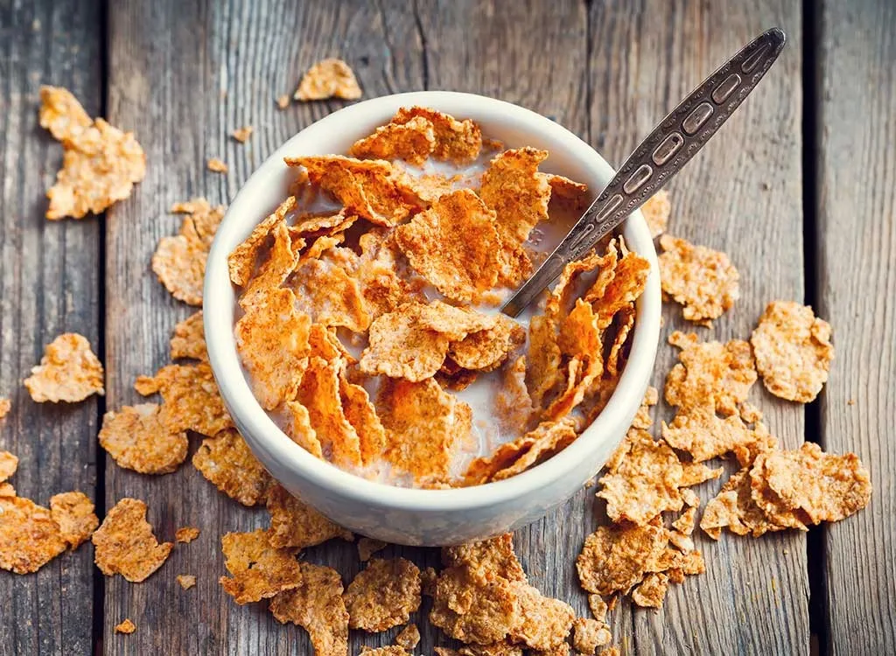

Cereal

Description
Cereal, is it a soup? Or is it its own thing? Also is it strictly
a breakfast? Or is it a late night snack as well? Either way it's good.
A bowl or 2 of it and you'll be left satisfied. Simple and yummy.
Ingredients
Steps
- Pour your cereal into the bowl first, as much as you desire
- Next pour your milk in, and stop when the cereal starts to rise a little
- Grab a spoon and finish before it gets soggy